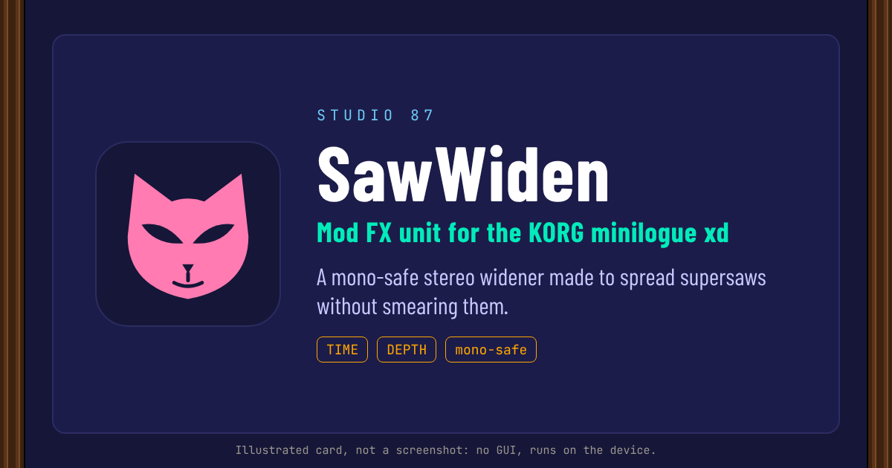

SawWiden
minilogue xd mod FX · version 1.0 · Studio 87
A mono-safe stereo widener for spreading supersaws without smearing them. The dry centre is never touched; a moving side signal is added to the left and subtracted from the right, so it cancels when summed to mono.

- Version 1.0. The unit in dist/ was built from this repo's source.
- No test on a real minilogue xd is recorded in this repo yet. Treat it as a test build and tell us what you hear.
- Linux install steps are not tested yet.
- Pre-release on GitHub.
Install
- Download the zip from Releases (or the unit file in
dist/). Do not rename or open thesawwiden.mnlgxdunitfile. - Open the KORG minilogue xd Sound Librarian and connect the synth by USB.
- Drag
sawwiden.mnlgxdunitinto a free User Mod FX slot and send it to the synth. - On the synth: Effects, MOD, USR, SawWiden.
Linux (not tested yet): use KORG's logue-cli, steps are in INSTALL.txt inside the zip and in the README.
Controls, as the synth screen shows them
SawWiden has no custom parameters of its own (num_param is 0). It uses the xd's two mod FX knobs, TIME and DEPTH, so the one-higher display rule for typeless parameters does not apply.
| Control | Screen shows | What it does |
|---|---|---|
| TIME | knob | Movement speed of the side signal, from about 0.05 Hz (slow drift) up to about 4 Hz (lively shimmer), exponential feel. |
| DEPTH | knob | Width. Lowest = no side signal (dry), highest = very wide. |
How it works: two delay taps (up to about 42 ms) moved by 3-phase LFOs, string-ensemble style, high-passed near 150 Hz so the low end stays in the middle, then used as the side signal.
Problems
No problems are recorded in this repo. If something sounds wrong on your synth, please open an issue and say which firmware you have.
Free and open source (MIT). Collects nothing, no network. Not affiliated with or endorsed by KORG. KORG and minilogue are trademarks of KORG Inc., used only to say which synth this works with.